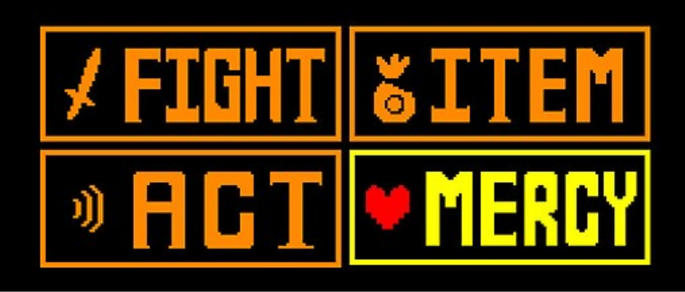

* Uma das principais características de Undertale é o seu sistema de escolhas. Durante a aventura, o jogador pode decidir como agir diante dos personagens e dos acontecimentos. Essas decisões podem mudar diálogos, batalhas, relacionamentos e até o final da história.
* Durante os combates, nem sempre é necessário atacar. O jogador pode escolher a opção ACT para realizar diferentes ações com o inimigo ou usar MERCY para poupá-lo. Também é possível escolher FIGHT e derrotar o adversário.
* As escolhas feitas ao longo do jogo influenciam o caminho seguido pelo jogador. É possível terminar a aventura sem matar nenhum monstro, seguir um caminho intermediário ou escolher eliminar os inimigos encontrados. Esses diferentes comportamentos estão relacionados às principais rotas do jogo: Pacifista, Neutra e Genocida.
* O mais interessante é que Undertale faz com que as escolhas tenham consequências. Personagens podem reagir de maneira diferente às atitudes do jogador, determinados acontecimentos podem mudar e algumas decisões podem afetar momentos posteriores da aventura. Por isso, o sistema de escolhas é uma das partes mais importantes de Undertale. O jogo não pergunta apenas o que você quer fazer, mas também faz você pensar sobre as consequências das suas decisões.

Voltar Rotas